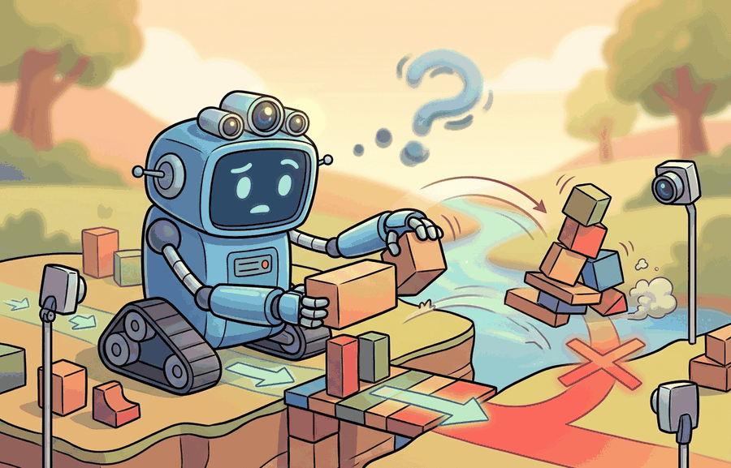

"I can solve the task once. Reliability is the part where the task notices."
A Long-Horizon Policy After Minute Twelve

This section builds on the long-horizon task framing introduced in section 51.3 and the reliability failure taxonomy from section 53.1. Readers who want concrete safety mechanisms to address the reliability gap should continue to section 54.2 (constraint violations and safe exploration) and section 54.4 (shielded policies and safety filters), where the open problems named here are treated as design targets.
A household robot completes a kitchen-tidying task flawlessly in the lab, then fails on the same kitchen twenty minutes later when a child moves a chair. That gap, between a policy that works once and a system that works reliably, is the defining unsolved problem of embodied AI right now. Three structural cracks explain it: long-horizon reasoning assumes that good local decisions compose into a good global trajectory (they rarely do), reliability assumes that held-out test performance predicts deployment (it does not), and real-world RL assumes that hardware interactions are cheap (they are not). You will learn to name the failure mode precisely, trace it to its structural cause, and evaluate whether a proposed fix genuinely closes the gap or merely defers it.
Students often assume that a robot achieving 85-90% success on short benchmark tasks means these problems are nearly solved and only incremental engineering remains. This is wrong in the embodied AI context because short-episode success does not compose: each small error in a long-horizon task compounds rather than cancels, so a policy that succeeds 90% of the time on 5-minute trials may succeed 0% of the time on a 20-minute real-world deployment where memory decays, sensor conditions shift, and no human reset is available. The correct mental model treats reliability as a curve over deployment horizon, not a single percentage: the open problems named in this section are structural gaps in how learning systems handle time, distribution shift, and physical sample cost, not just accuracy shortfalls that a larger model will automatically close.
This section develops the technical contract for what is still unsolved (long-horizon reasoning, reliability, real-world rl) into a usable mental model. First we define the object of study, then we connect it to the agent loop, then we test it with a compact implementation.
These three problems persist not because researchers have ignored them but because each one attacks a different structural assumption that most learning pipelines take for granted. Long-horizon reasoning breaks the assumption that a good local policy composes into a good global trajectory. Reliability breaks the assumption that a held-out test set predicts deployment performance. Real-world RL breaks the assumption that the number of training interactions is cheap. A household robot asked to tidy a kitchen, retrieve a specific medication, and then report back has to handle all three simultaneously: it must commit to a multi-step plan, stay safe around humans and fragile objects, and do so after only hours of on-hardware experience rather than millions of simulated steps.
The key question in What is still unsolved (long-horizon reasoning, reliability, real-world RL) is practical: what must the agent know, what can it observe, what action is available, and what evidence shows that the action worked under the stated conditions?
Unsolved reliability problems should be judged by the action it improves. A section claim is strong when it names the decision, the measurement, and the failure mode before a larger model or simulator is introduced.
Theory
Each of the three open problems attacks a different physical bottleneck. Long-horizon reasoning fails when subgoal memory decays faster than the task horizon: a Transformer-based policy such as RT-2 has a fixed context window, so a kitchen-tidying task that spans twelve minutes and forty robot-steps will silently drop the earliest observations, causing the robot to re-grasp objects it has already placed or to re-enter a room it has already cleared. This matters in physical systems because re-grasping wastes irreversible time, risks collision with already-placed objects, and erodes the trust of any human co-worker present. Unlike a software bug that can be patched silently, a redundant physical action leaves a trace in the world. The compounding mechanism is that each dropped observation removes a constraint: without the memory that a cup is already stowed, the agent treats the cup as unconstrained, so its value function assigns positive utility to grasping it again, producing a locally correct but globally redundant action at every subsequent step. Reliability fails when the held-out test distribution does not capture deployment shift: a policy trained in one kitchen generalises poorly once a chair moves 30 cm, a new lighting condition changes RGB values outside the training range, or a human body partially occludes a target object. Real-world RL fails because on-hardware episodes are expensive in a way that simulated ones are not: every Franka Panda grasp attempt that ends in a drop risks joint-torque overload, finger wear, and an operator reset that itself costs two to five minutes of wall-clock time, making the effective sample budget orders of magnitude smaller than the millions of steps typical of sim-only benchmarks.
Long-horizon failure is a memory and credit-assignment problem: the reward signal for step 1 of a 40-step task does not arrive until step 40, so gradient flow through a policy gradient or Q-function update is sparse and delayed. Reliability failure is a covariate-shift problem at the sensor boundary: a depth camera such as the Intel RealSense D435 returns NaN patches on reflective surfaces, and a policy that was never trained on those patches propagates a corrupted point cloud through its entire planning stack. Real-world RL failure is a physical-cost problem: sample efficiency in sim-to-real transfer drops by a factor of 100 to 1000 when moving from MuJoCo rollouts to hardware because contact dynamics in simulation do not match measured friction and compliance on the real manipulator, so many sim-learned skills require on-hardware fine-tuning before they are deployable, each fine-tuning step incurring mechanical wear and safety-stop risk.
Worked Example
Consider a mobile manipulator asked to retrieve a specific medication from a cabinet and bring it to a person seated in an adjacent room. At minute zero, the task plan is correct. At minute four, a door swings shut and the robot's occupancy map goes stale. At minute eight, the medication bottle is partially occluded by another object. At minute eleven, the robot must recover from a failed grasp without any reward signal having been received yet. Each minute exposes a different failure: localization drift, sensor occlusion, and sparse delayed reward are all active simultaneously. A policy that scores 90% success on isolated 90-second pick-and-place trials in simulation may complete this task 0% of the time on first deployment, because none of the three failure modes appear in a 90-second sim episode.
For What is still unsolved (long-horizon reasoning, reliability, real-world RL), keep the small contract as the inspectable interface, then use OpenVLA, SmolVLA, GR00T, Gemini Robotics, or pi-zero-family tools without changing logging or replay fields.
Practical Recipe
- Write the observation, action, and success metric before choosing a model.
- Build a baseline that is simple enough to debug by inspection.
- Add the library implementation only after the baseline behavior is understood.
- Record failures as structured cases: perception error, state error, planning error, control error, or evaluation error.
- Run at least one perturbation test before trusting the result.
The common mistake in What is still unsolved (long-horizon reasoning, reliability, real-world RL) is to trust a component score before checking the closed-loop interface. The failure usually appears where state, timing, authority, or evaluation context crosses a module boundary.
A team using What is still unsolved (long-horizon reasoning, reliability, real-world RL) starts by writing the task panel, not by picking the largest model. They keep a baseline run, a maintained-tool run, and a perturbation run in the same result folder. The comparison is accepted only when the action trace, metric, and failure labels come from one script.
When what is still unsolved (long-horizon reasoning, reliability, real-world rl) feels abstract, ask what would be different in the next frame of video, the next robot state, or the next safety margin.
For What is still unsolved (long-horizon reasoning, reliability, real-world RL), the open research question is not whether a larger policy can produce a better demo. The sharper question is whether the method improves reliability across new scenes, new embodiments, delayed feedback, and rare failures under an evaluation protocol that another lab can reproduce.
For What is still unsolved (long-horizon reasoning, reliability, real-world RL), can you name the observation, action, protected assumption, success metric, and one likely failure case? If any field is vague, rewrite the contract before adding model complexity.
Topic-Native Deepening
This section names the failures that still separate strong demos from dependable embodied systems. Long-horizon reasoning, reliability under shift, and real-world reinforcement learning remain difficult because they require the agent to preserve credit assignment, memory, safety, and calibration over many interacting decisions.
The useful move is to turn each broad complaint into a measurable failure mode. Instead of saying that robots struggle with long horizons, specify whether the failure comes from memory decay, cumulative localization drift, mistaken subgoal commitment, or reward sparsity.
What is still unsolved (long-horizon reasoning, reliability, real-world RL) becomes teachable once the student can state the operative variables, the decision boundary, and the evidence artifact. The section should therefore be read together with Chapter 45 on locomotion reliability and Chapter 54 on safety, where the same loop is developed from adjacent angles.
Reliability over a deployment horizon $H$ can be summarized as $R(H)=\Pr(\text{task success and no safety violation for all } t\le H)$. This is stricter than average success because a policy that succeeds 90 percent of short episodes may still have a poor $R(H)$ once failures compound across time.
RT-2 (Brohan et al., 2023) demonstrated strong single-step instruction following but required human resets every few steps in multi-stage tasks, exposing the long-horizon gap directly. SayCan (Ahn et al., 2022) decomposed tasks into short subgoals and achieved 74% success on 101 real-world kitchen tasks, yet success dropped sharply when object placements deviated from training distribution, illustrating the reliability gap. On real-world RL, the work behind ALOHA (Zhao et al., 2023) reported that imitation-initialized policies needed roughly 50 on-hardware fine-tuning episodes to recover from novel failure modes, each episode costing physical wear and operator time. These numbers make the problems concrete: it is not that systems fail completely, it is that they fail in predictable ways that each map to one of the three open dimensions.
The difference between success rate and reliability is temporal composition under real conditions: a system that succeeds on 84% of 5-minute episodes may succeed on only 33% of 20-minute episodes running the same policy, because each small error compounds rather than cancels. A system can be good at isolated moves and still bad at staying good for twenty minutes, across new homes, with intermittent sensing, or after one awkward recovery step.
Think of a long sea kayak crossing where each stroke introduces a tiny heading error. On a five-minute paddle the drift is invisible. On a four-hour crossing the same uncorrected 2-degree error each stroke places you a kilometre off target, even though every individual stroke looked fine. Long-horizon reliability works the same way: the policy does not get worse step by step, the geometry of compounding does. The only fix is periodic absolute-position checks (replanning from world state), not better individual strokes.
- Choose one long-horizon task with meaningful recovery opportunities.
- Label failure families: memory, grounding, planning, control, safety, and evaluation.
- Run nominal, shifted, and interruption-heavy episodes with a fixed metric script.
- Measure both task success and reliability-over-time, including intervention frequency.
- Keep the problem statement attached to the dominant failure family rather than to a generic headline.
| Dimension | What To Specify | Why It Matters |
|---|---|---|
| Long-horizon reasoning | Subgoal persistence, memory freshness, recovery after interruption | Task completion over long episodes with error decomposition. |
| Reliability | Repeatability across homes, tools, and human variation | Reliability curve plus safety-intervention rate. |
| Real-world RL | On-hardware sample efficiency and safe exploration | Improvement per interaction hour and incident count. |
| Evidence artifact | Failure-labeled replay suite and reliability ledger | Turns vague frontier talk into actionable experiments. |
def validate_ledger(payload: dict[str, object]) -> dict[str, object]:
assert payload, "payload must not be empty"
return payload
# Reliability ledger for an open-problem study.
ledger = {
"episode_minutes": [5, 10, 20],
"reliability": [0.84, 0.61, 0.33],
"dominant_failure": "memory stale after interrupted subgoal",
"interventions_per_hour": 2.4,
}
print(validate_ledger(ledger)){'episode_minutes': [5, 10, 20], 'reliability': [0.84, 0.61, 0.33], 'dominant_failure': 'memory stale after interrupted subgoal', 'interventions_per_hour': 2.4}The expected output should show degradation with horizon, not just one aggregate success score. That degradation curve is the point: it tells the researcher where the loop stops being dependable.
When building a reliability ledger like the one above, always log interventions_per_hour as a first-class field alongside task success. Many real-world RL papers report only successful-episode counts, which makes a policy that needed 400 physical attempts look equivalent to one that needed 200; the intervention rate exposes that difference immediately. In CleanRL or LeRobot experiment scripts, add a single counter incremented on every safety stop or operator reset and write it to the same JSON artifact as your reward curve so the two stay coupled and comparable across runs.
After the from-scratch contract is clear, the practical route uses LeRobot, OpenVLA, ROS 2 logging, Dreamer-style planners, CleanRL, safety monitors, hardware replay tools. The payoff is that standard interfaces, logging, batching, and replay support move from ad hoc glue code into maintained infrastructure, while the evidence schema stays the same.
A semester team can study reliability without expensive hardware by injecting interruptions, stale maps, and delayed observations in simulation, then tracing which subsystems fail first. The deliverable should be a replay suite and a ledger, not only a discussion paragraph.
Real-world RL experiments often underreport the true sample cost by counting only successful learning episodes and omitting the failed or aborted ones that caused hardware wear, required operator resets, or triggered safety stops. A policy that appears to converge in 200 episodes may have required 400 physical attempts once resets and safety interventions are counted. This makes cross-paper comparisons of "sample efficiency" almost meaningless unless the intervention protocol and reset cost are explicitly logged and reported alongside task success.
The frontier problem is compositional reliability: can an embodied agent remain competent after many small mismatches rather than one catastrophic shift? Progress will probably come from better memory systems, stronger recovery policies, and evaluation protocols that treat repeated deployment as first-class evidence.
For What is still unsolved (long-horizon reasoning, reliability, real-world RL), the printed artifact should identify the open technical uncertainty, the evidence already available, and the next experiment or design review that would make the frontier claim testable.
Project Ideas
Beginner (weekend): Reliability degradation logger in Gymnasium. Build a Gymnasium wrapper around a standard locomotion environment (such as HalfCheetah or Ant) that injects random observation noise at a configurable rate, then plot task-success rate against episode length to produce a reliability curve like the one discussed above. The key challenge is separating noise-induced failure from policy weakness without access to a ground-truth state oracle.
Intermediate (1 to 2 weeks): Long-horizon task monitor with replanning in Isaac Lab or PyBullet. Implement a tabletop manipulation task (pick, stack, and sort three objects) in Isaac Lab or PyBullet where the agent must complete all three stages in sequence, and add a subgoal-staleness detector that triggers a replanner when the memory buffer drops a completed subgoal. The key challenge is designing a lightweight memory representation that survives the full task horizon without requiring a fixed-length context window that silently truncates early steps.
Intermediate (1 to 2 weeks): On-hardware sample-cost tracker for LeRobot. Extend a LeRobot training script for a real or simulated SO-100 arm to log every episode attempt including aborted runs and safety stops alongside the standard reward curve, then compare reported sample efficiency with and without the aborted episodes to quantify how much conventional reporting underestimates true hardware cost. The key challenge is instrumenting the safety-stop callback so that partial episodes are recorded in the same artifact as successful ones rather than silently discarded.
- What is still unsolved (long-horizon reasoning, reliability, real-world RL) matters when it changes an embodied agent's action under a stated observation and metric.
- Name the failure horizon: minutes, hours, novel homes, novel tools, or rare safety events.
- Strong evidence is saved as one artifact containing the baseline, the maintained-tool path, the metric panel, and labeled failures.
Design a method-matched experiment for What is still unsolved (long-horizon reasoning, reliability, real-world RL). Specify the environment, observation schema, action interface, metric, and one perturbation that targets the section's core assumption.
Section References
Open X-Embodiment Collaboration. Open X-Embodiment: Robotic Learning Datasets and RT-X Models. arXiv, 2023.
Use for cross-embodiment data scaling, RT-X evaluation, and dataset-standardization claims.
Bardes, A. et al. Revisiting Feature Prediction for Learning Visual Representations from Video. arXiv, 2024.
Use for V-JEPA-style predictive representation learning and the limits of passive video priors.
What's Next?
Next, continue with Frontier Watch, where this frontier question is connected to a different research bottleneck.